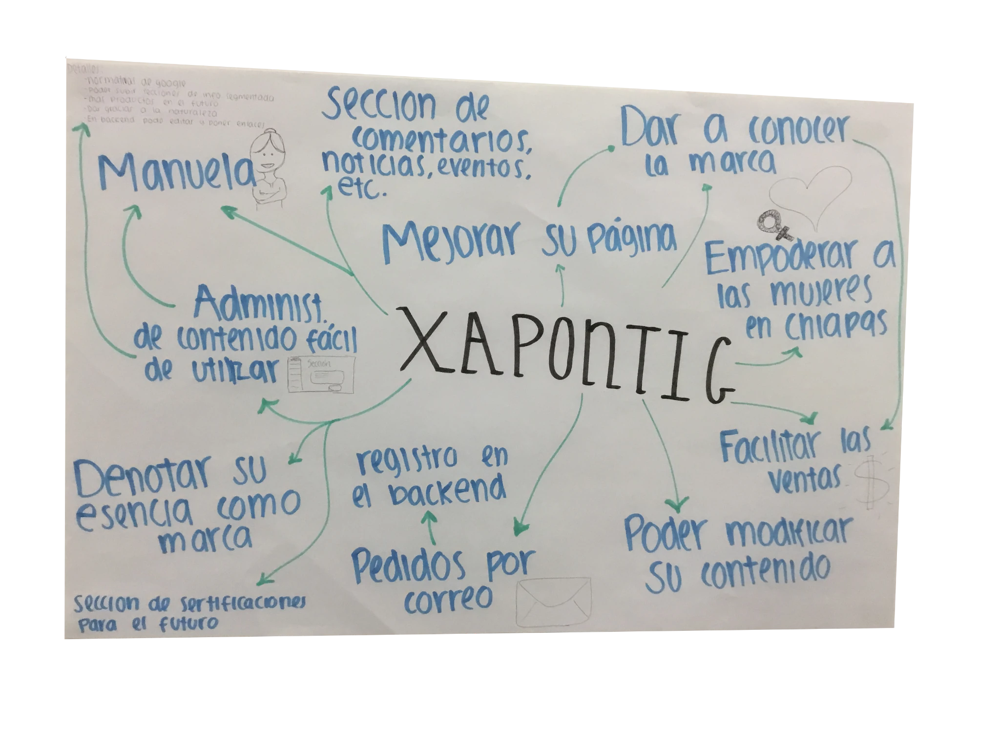

Xapontic produce jabones artesanales a través del trabajo de mujeres tseltales del norte de Chiapas. Cuando empezamos, todavía no tenían sitio web. El brief era crear la experiencia para clientes y un backend que el equipo pudiera actualizar sin tocar código.
La pregunta de UX era sencilla: ¿cómo contamos la historia detrás del producto sin hacer más difícil explorar y pedir?
Yo llevé la mayor parte de la experiencia front-end: wireframes, prototipos interactivos, UI visual, layouts responsivos, pruebas de usabilidad e implementación en HTML/CSS/JavaScript. Otro compañero se encargó principalmente del backend y la base de datos.
